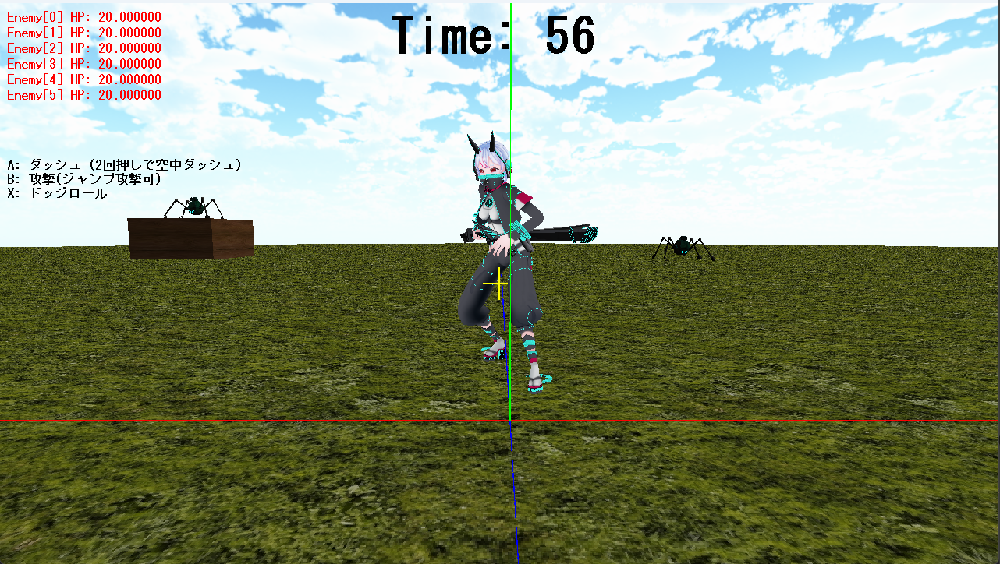

概要

ジャンル
殲滅型アクションゲーム
制作期間
約2ヶ月間(2025/10/31-2025/12/19)
製作人数
1名
担当箇所
開発全般
開発環境
C++、Visual Studio、DXライブラリ
ゲームプレイ動画
どんなゲーム？
プレイヤーを操作し、制限時間内にステージ内の敵をすべて倒すことを目指す殲滅型アクションゲームです。
敵の位置を確認しながら攻撃や移動を行い、限られた時間の中で効率よく敵を倒していくことがポイントとなっています。
アピールポイント
攻撃判定
攻撃判定にはカプセル形状を使用し、プレイヤーの攻撃範囲を行いました。
攻撃開始時に判定の発生までの待機時間と有効時間を設定し、有効中のみ敵とのカプセル同士の当たり判定を行うようにしています。
また、攻撃判定をプレイヤーの右手のボーンに追従させることで、キャラクターの攻撃モーションに合わせて判定位置が移動するようにしました。
ボーンのローカル行列とモデルのワールド行列からワールド座標を求め、毎フレーム攻撃判定を更新しています。
同じ攻撃が同じ敵に何度も当たらないよう、攻撃ごとにヒット状態を管理し、一度命中した攻撃は再度その敵との判定を行わないようにしています。
攻撃範囲の状態
AABBによる当たり判定
プレイヤーを球、キューブをAABBとして扱い、球とAABBの当たり判定を実装しました。
まず、プレイヤーの中心座標に最も近いAABB上の点をX・Y・Zそれぞれの軸で求め、プレイヤーの中心との距離が半径以下であれば衝突と判定します。
衝突した場合は、まずY方向の押し出し量を計算し、上下方向の衝突を処理します。
その後、X・Z方向の押し出し量を計算し、最も小さい方向へプレイヤーを移動させることで、障害物へのめり込みを防ぎました。
さらに、押し出し処理の後にプレイヤーの下方向へ線分判定を行い、地面や足場の高さを取得してY座標を補正することで、正しく着地できるようにしました。
キューブとの当たり判定の状態
プレイヤーのアクション
プレイヤーのアクションを状態ごとに管理し、通常移動、ジャンプ、ダッシュ、回避、攻撃などを実装しました。
入力された操作とプレイヤーの状態を確認し、地上・空中それぞれで実行できるアクションを切り替えています。
特に空中攻撃では、ジャンプ中に一度だけ攻撃できるようにしました。
空中攻撃中も重力による落下処理を続けることで、攻撃のために空中で動きが止まることを防ぎ、攻撃後もそのまま落下して着地できるようにしています。
これにより、ジャンプから攻撃、着地までを一連の動作としてつなげ、空中でも敵との距離に応じて攻撃することができます。
さらに、アクションごとに移動速度や重力、アニメーション速度を設定し、攻撃や回避中は通常移動を制限することで、それぞれの動作が意図した挙動になるよう調整しました。
ジャンプ
ダッシュ
回避
地上での攻撃
空中での攻撃